Cantilever Truss
The objective was to design and build a simple lightweight truss from aluminium alloy to support the load conditions. The first load condition is an upwards load of 270 N, the second load is a downwards load of 2700 N, both at a distance 815mm out from the rigid plate. The load rod is 115 mm across and requires two 10mm holes for the M10 bolts either side
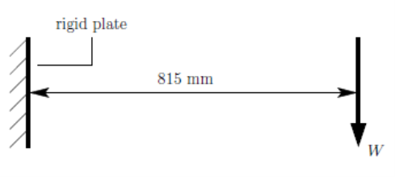Design process
Some early inspiration for the shape of our truss was taken from cranes. Having a very similar load condition, it made sense to analyse the warren truss that are commonly used in modern cranes. However, these are generally in a slanted triangle shape which is much harder to make with the shape of the rigid plate. A topology optimisation simulation was done on SOLIDWORKS with the goal of best stiffness to weight ratio. The shape produced resembles the warren truss and so we decided that was the one we were going to use.
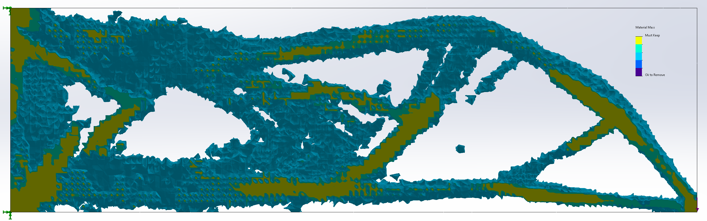The curves in the output shape mean that its extremely difficult to recreate in the aluminium angle iron and plate so we copied the rough shape of the truss. After briefly considering a triangular truss it was decided to simplify the warren truss above. The number of central members were decreased by changing it to a Λ shape, rather than having it as an M. This made it easier for calculations and construction and means that the geometry is only defined by the angle at A.
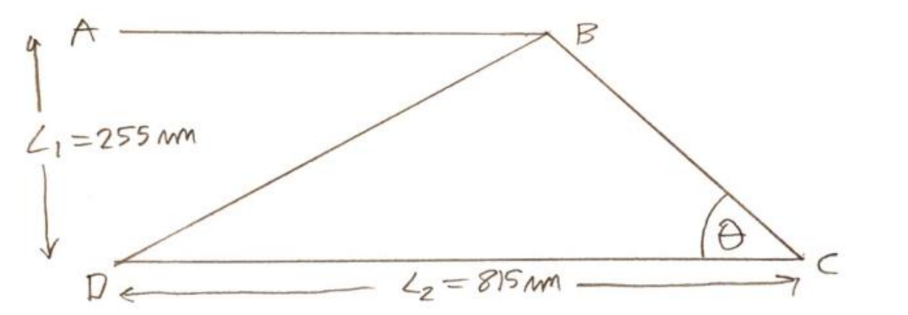From inspection of the compression members are BD and CD. Aluminium alloy is strong in tension and weak in compression as it is more susceptible to buckling than plastically deforming though tension. The Euler critical buckling load also depends on the length of the beam squared as seen in equation below.
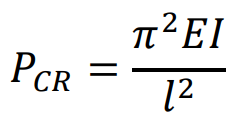By finding the compression multiplied by length squared of both compression members as functions of θ, then differentiating it, equating it to zero and then solving for 𝜃, it is possible to find the optimum angle to prevent Euler buckling.
For member BD This was found to be
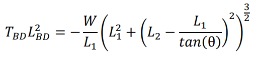Which substituting values into the equation, the optimum angle is at a minimum at 𝜃 = 17.4°
For member CD This was found to be
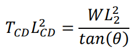The buckling stress in CD decreases the closer 𝜃 is to 90° and so to minimise both we picked a value of 𝜃 = 35°. We also added some zero force members close to the middle of BD and CD to further minimise the buckling and also some diagonal members to prevent twisting and outwards buckling. This was the final profile.
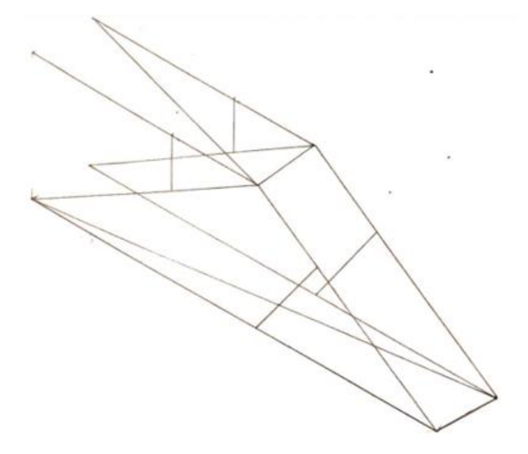To minimise weight, efforts were made to use the lightest alloy members of minimum crosssectional area that can support the load. Using a factor of safety of about 1.1 the load is 3000𝑁, which gives 𝑊 = 1500 N on each side. Each member’s effective load is found using pin joint analysis and is divided by the maximum stress, 255 𝑀𝑃𝑎, which gives the minimum effective cross-sectional area required to withstand the tensile loads. The member with an effective area as close to, but greater than the minimum area required is selected. The effective area accounts for the rivit hole and ignores a section of the angle iron that does not provide tensile support.
For compression members, their mode of failure is from buckling, where the member bows out. The critical buckling stress decreases rapidly as slenderness ratio, the ratio of the beam's length over width, increases. After some initial calculations it was obvious compression of any member either needed doubling up, or cross bracing. Doubling up members constrains the beams to buckle in a different mode, however after trying many combinations of members and comparing them to braced members it was found that bracing is far more cost effective. Bracing works by adding equally spaced zero force members along the compression member which can halve for third the slenderness, greatly decreasing the chances of buckling. So, for the compression members we need to ensure that they are braced enough that the compressive stress is less than the critical buckling stress while the beam is as slender as possible. The diagonal and buckling bracing are made from 9.5 angle as they are zero force members.
For the number of rivets at each joint their maximum shear failure load is 1260 N and so the minimum number of rivets required can be calculated, from rounding up and in some cases using an extra one to be on the cautionary side as rivets are cheap and don't add much weight to the structure.
Drawings
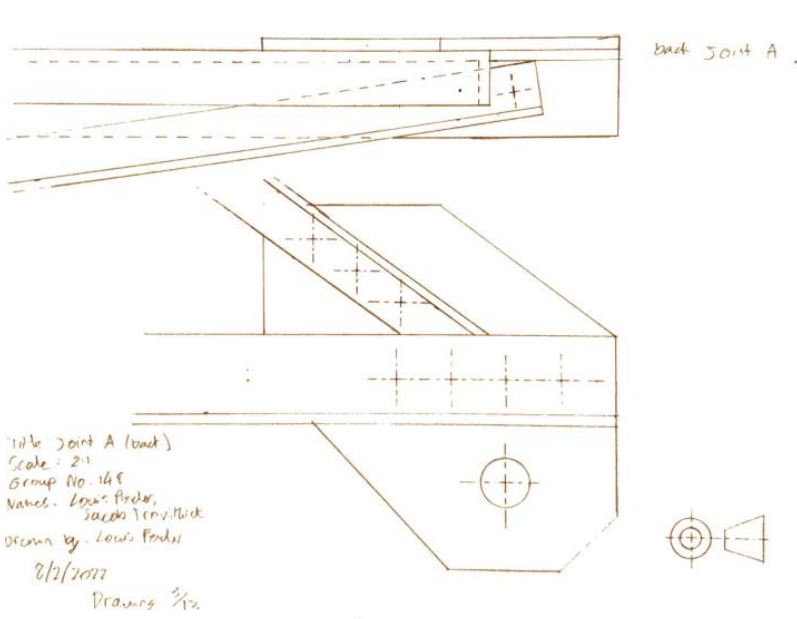 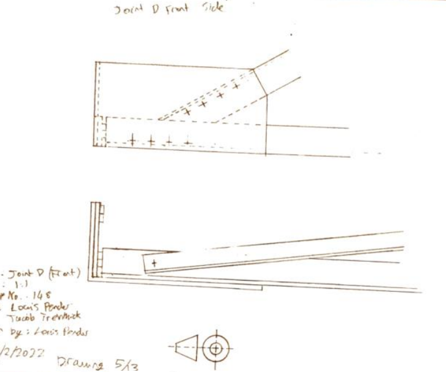 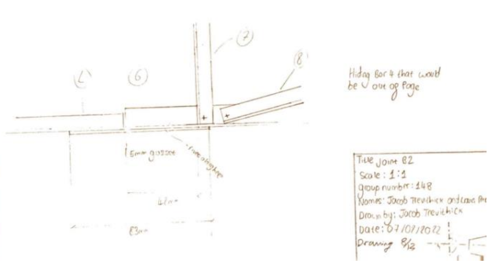 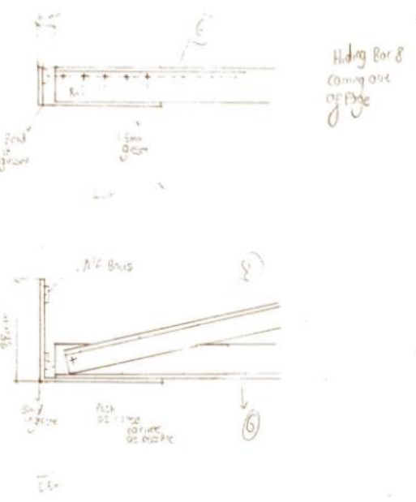Construction
The side of the gusset plate that attached the truss to the back plate hung off the edge. While this isn't a problem for the top tensile load, it's a problem for the compressive load as gusset plates easily buckle.
The whole structure was slightly twisted, which was somewhat corrected for by using packing washers behind the bottom left gusset plate that attached to the back plate. This was likely caused by one of the beams on one side being the incorrect length.
In 9.5 and 12.5 angle irons, the rivets were on the line of the beam's centroid. In many cases the rivets were off their line due to the centre punch being very difficult to accurately place.
Testing
A small amount of buckling was observed at the working load, but major type A buckling occurred sideways in CD and a some in BD while loaded above the working load. However, before it could deform plasticly, the upper left gusset plate sheared, likely due to the large deflections.
The truss was first tested with the 270N upwards force, which it easily supported. It was then loaded up to a working load of 1.35kN with no visible deformation, it was then loaded up to a maximum load of 1.83kN before breaking. This makes it 68% of designed load was achieved
Future Modifications
A sideways cross member was required to prevent the buckling, something our group, and a few others had overlooked in the 3D truss design. It is likely that the upper plate gusset shearing was due to the larger deflections caused by the buckling and the sideways cross member would take is closer to the designed load. The deviations in construction weren’t severe enough to cause an unexpected failure at the load that was achieved, however it could have at a higher load so more care should be taken to reduce these deviations.
Final Remarks
The truss was optimally designed to reduce buckling stress in only the side plane, and not the horizontal plane, and so members CD just buckled sideways. It was predicted from the calculations that the truss would fail due to buckling, but not in the plane that we considered. Our groups truss design was slightly under the average in terms of cost and its performance, however with the modifications made I believe could perform as expected by the calculations.